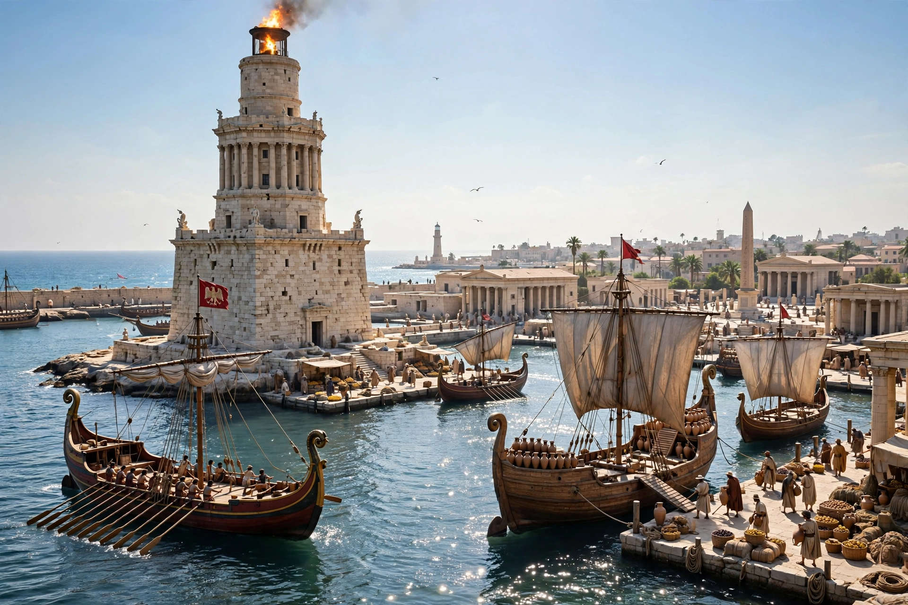

| Aegyptus | |
|---|---|
| Province of | The Roman Empire |
| Established | 30 BC, after the defeat of Antony and Cleopatra |
| Capital | Alexandria |
| Governor | Praefectus Aegypti (equestrian prefect) |
| Ended | Arab conquest, AD 641–642 |

Roman Egypt (Latin: Aegyptus) was the province of Egypt under Roman rule from 30 BC, when Octavian (the future Augustus) annexed the Ptolemaic kingdom after defeating Mark Antony and Cleopatra VII, until the Arab conquest of AD 641–642. Egypt occupied a unique position in the empire: it was governed not by a senator but by an equestrian prefect answerable directly to the emperor, senators were forbidden to enter it without imperial permission, and its grain harvests fed the city of Rome.
Augustus treated Egypt almost as a personal possession. The prefect (praefectus Aegypti), the first being Cornelius Gallus, commanded the legions stationed at Alexandria and Nicopolis and headed an elaborate fiscal bureaucracy inherited from the Ptolemies. Society was rigidly stratified: Roman citizens at the top, then the Greeks of the three Greek cities (Alexandria, Naukratis, Ptolemais — later joined by Hadrian's Antinoöpolis), then Jews with their own communal organization, and at the bottom the Egyptian villagers, who paid higher taxes including the poll tax from which the privileged were partly or wholly exempt. The Gnomon of the Idios Logos, a surviving rulebook, meticulously policed these status boundaries.
Egypt's importance was above all economic. Its irrigated agriculture produced an enormous surplus of grain shipped annually to Rome (the annona), and Alexandria was the entrepôt for luxury trade with India and East Africa through the Red Sea ports. The province's papyri — census returns, tax receipts, private letters, petitions — survive in unmatched quantity from the dry desert edges and make Roman Egypt the best-documented society of the ancient world.
Traditional Egyptian religion flourished under imperial patronage: emperors were depicted as pharaohs and built temples in Egyptian style, as at Dendera and Philae, into the third century. The cult of Isis and Serapis spread empire-wide from Alexandria. Egypt was also an early center of Christianity — tradition ascribes its evangelization to St. Mark — and gave the church both Alexandrian theology (Origen, Athanasius) and monasticism, founded by Antony and Pachomius in the Egyptian desert. The Jewish community of Alexandria, the largest in the diaspora, was destroyed as an organized force in the revolt of AD 115–117 under Trajan.
The third century brought invasion, plague, and revolt: Palmyrene forces under Zenobia occupied Egypt in 270–272 before Aurelian recovered it, and Diocletian besieged Alexandria in 297–298 after a usurpation. Under the later empire Egypt was divided into several provinces within the Diocese of Oriens. In the seventh century it fell first to Sasanian Persia (618–629) and then, definitively, to the armies of the caliphate in 639–642, ending nearly seven centuries of Roman rule — yet its grain, taxes, and administrative personnel continued to serve new masters much as before.